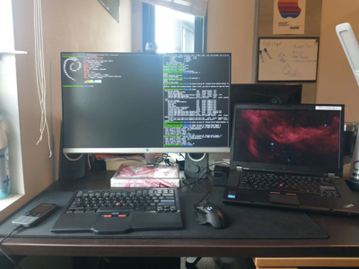

Old ThinkPads are the best computers in existence. Really.
I love old ThinkPads — February 03, 2023

For the longest time, I used a desktop as my main computer. It made sense; desktops have better thermals, better performance, and are overall a better value than laptops. I was assigned one at school, too, which covered my portable computing needs. Unfortunately, when they downgraded from Lenovo Yogas to Chromebooks, I couldn't run the software needed to work on my projects.
I already had a seldom-used 2012 MacBook Pro. I managed to get it up and running and, while it served my needs until graduation, the thermal performance was abhorrent. It would spike to 75C while web browsing, even higher if doing something demanding. Not to mention the battery was worn out, keys were falling off, and it would randomly refuse to start.
During the summer, I picked up a ThinkPad X220i from a swap meet. By then the MacBook had died, so it became my main laptop. Though originally purchased as a Linux plaything, I grew to like it. The 12.5" form factor was very portable, and battery life was great (8-10 hours) with a new 9-cell battery. I spent more than I'd care to admit on upgrades, but overall felt they were worth it.
And then it got stolen. I left my bag somewhere on the Cal Poly campus, and never saw it again. I needed a new laptop, especially with college underway. After returning to LA on break, I stopped by the same swap meet and bought another ThinkPad. I ended up with an i5 T530 for only $20, in surprisingly good condition.
I've since switched out the horrible 768p screen for a 1080p 95% sRGB panel, upgraded the RAM to 16GB, acquired a new 9-cell battery, switched the chiclet keyboard for an old-style one, and upgraded the CPU to a quad-core i7-3610QM. The total cost was under $200, an insignificant amount to pay for a laptop.
It has since become my main computer, dethroning the more powerful desktop. This was out of convenience; I dislike having to sync files between multiple computers. When I leave my dorm, all I have to do is un-dock my laptop. And when I get back, I set it down and all my peripherals are connected.
Performance
People don't understand how I could possibly use a 10 year-old laptop in 2023. They think because it's old, it must be slow. This simply isn't the case. Evidently, the performance required for normal tasks plateaued a while ago. It browses the web fine. It plays YouTube fine. It compiles code fine. I don't play AAA video games, nor do I work with huge datasets. There's no reason to pay 10x the cost for unnecessary performance.
In benchmarks, 3rd-gen QM i7s still hold their own. Compared to an 8th gen ULV i5 (2018), mine's only ~20% slower. The difference is less noticeable in practice since all modern laptops thermal throttle before reaching peak performance. In a video comparing a T430 vs T480 running handbrake, the T430 took less time because it wasn't throttling.
As a side note, the T530 is the quietest computer I've owned. Most of the time when I'm programming or web browsing, the fan's at 0 RPM. It seldom gets hot, hovering around 50C under light usage. It's the complete opposite of my MacBook Pro, and the clunky Dell Latitude I got from school.
The only component showing its age is the HD4000 iGPU. Yet, while struggling with 3D games, it's adequate for 2D content. If you so badly want to game on the go, I think should reconsider your priorities. I've been more productive since I can't drop into GTA V or BeamNG when I'm bored. Instead, I read or work on personal projects. If you think I hate fun, I have played some games on it. Terraria and RimWorld run great. Even Portal 2 and Fallout:NV get a solid 60fps, granted you turn the settings down.
The keyboard
Old ThinkPads have amazing keyboards. Mine didn't come that way- the x30 series used an awful chiclet model- but I effortlessly modded in an old-style one. The layout is great; they somehow managed to include all the desktop keys in a laptop footprint. "Sorcery!", you might say. No, just an efficient use of space. Everything is put in logical, easy-to-reach groups. There's even a toggle-able number pad.
It's also great to type on. The scissor switches are firm, with a perfect actuation force. As someone who used a mechanical keyboard for years, I prefer that of my ThinkPad.
The TrackPoint
The TrackPoint will change your life, really. I vastly prefer it to conventional trackpads and mice. Because it's in the middle of the keyboard, you can move the cursor while typing. As someone who uses the keyboard as much as possible, it's annoying having to constantly move my hand off it. It's also convenient doing everything from a single contact point, no finger dragging.
Some people swear by touchpads because they think they need finger gestures, which is silly because keyboard shortcuts do the same things, faster. Using the keyboard will make you a more efficient computer user.
Everyone who complains about the TrackPoint is just using it wrong. The default settings used by Windows suck; Windows in general sucks. Turn up the sensitivity, develop the necessary muscle memory, and you won't go back.
Linux
ThinkPads are the best computers for Linux, since drivers are tailor-made to run on them. I have Debian on mine, it's been a great experience. Granted, you can get Linux running on other computers without issue, but on ThinkPads it "just works".
Durability
Because they were designed for business use, ThinkPads are very durable. For example, I accidentally slipped my old X220i under a chair. After being crushed under 160 lbs for 15 minutes, only a single lid clip broke. There are many stories of ThinkPads getting flung off cars or dropped down stairs and surviving. Consumer-grade laptops can't compete: horrible plastic, horrible hinges, horrible keyboard. Doesn't matter how much you paid, a laptop shouldn't wear out after 3 years .
Upgradeability
In addition to lasting forever, they're very upgradable. I upgraded the CPU, RAM, screen, keyboard, WiFi card, and battery on mine. You'd be lucky to get two NVME sockets on a modern laptop, let alone a single RAM slot. While old ThinkPads don't support modern CPUs, upgrading to a higher-end i7 can make a big difference.
Recommended models
Generally, I'd recommend the x30-series of ThinkPads (x230, T430, T530, W530). They're the considered the last "classic" generation, are compatible with 3rd gen Intel CPUs, and can be modded to accept old-style keyboards. The x20-series is also good, though the HD 3000 iGPU is a step down from the HD 4000. If you seek GPU performance, both generations are lacking. While dGPU models are available, they get hot and use more power. They also work terribly with Linux. But, as I said before, people wildly overestimate the amount of performance they need. Don't game, don't do crazy AI whatever, and you'll be fine.
My personal favorite is the T530 since it's the only one with a native 1080p screen option. Though a TN panel, it's superior to low-end IPS offerings. The x230 is a great choice if you want a light, efficient travel computer and don't care about performance. Many people swear by the T430; I've never used one, but the T530 seems better given its screen compatibility and thermals.
I wouldn't recommend anything older, especially Core 2 Duo machines, since they're barely sufficient for modern web browsing Yes, they're fun machines. No, they aren't practical. I also wouldn't recommend the x40/x50 series, because they're lacking in performance (dual-core ULV processors, bleh) and build quality.
If you want something newer, you can't go wrong with the T480. Better specs, better battery life, an IPS screen option, and USB-C. They enjoy throttling, though, and lack the upgradeability of older models. The keyboard's also inferior, though that's personal preference. That's what it comes down to when comparing the x30 and x80 series, anyway. Both are good, both are practical, and both can be had for cheap. It just depends on what you like.
Conclusion
I'm not advocating for the replacement of your already-functional computer with a 2012 ThinkPad, there are other acceptable machines out there. However, they're missing something old ThinkPads have- they're commodities, not tools. By nature, ThinkPads are a rejection of technological consumerism. They exist to function as business appliances, a role entailing everything previously mentioned.
To keep the consumption cycle going, companies must create an artificial need for their products. A device cannot be durable and upgradable, that would give the consumer too much freedom to opt-out. They instead try and turn technology into limited-use goods. And it works, because people would rather feel good about big numbers than have autonomy. It's like that with a lot of stuff, but especially complex technology since it's hard for people to consider their implications.
If more things were like ThinkPads, the world would be a better place.
Well, that's the end of my pro-ThinkPad rant- all 1.3k words of it. Got a bit philosophical at the end but seriously, they're great computers. Definitely worth considering if you're in the market for a new machine. Alright, time to sleep...